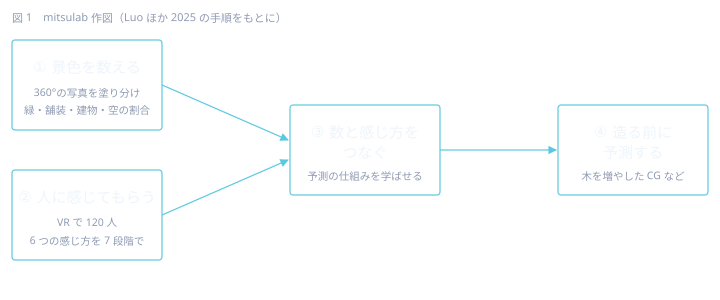
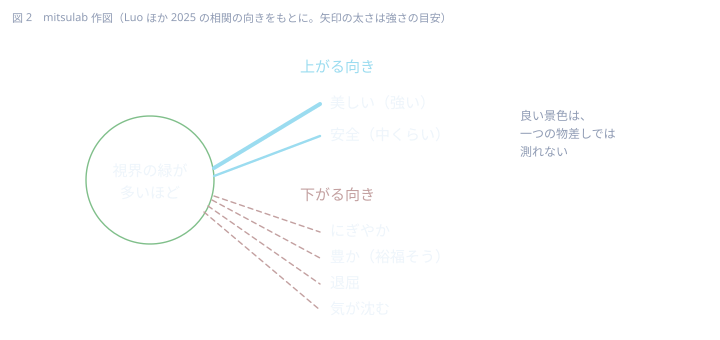

街のデジタルコピーに、人の感じ方を重ねたら？
環世界ノート mitsulab
1. 身近な問い
同じ川沿いの道でも、「気持ちいい」と感じる区間と、なんとなく早く抜けたくなる区間があります。
その違いを、道を造る前に知ることはできるでしょうか。
2. この研究を一言で
街を丸ごと写した 3D の模型（デジタルツイン）に、「人がその景色をどう感じるか」を足し、まだ造っていない景色の感じ方まで予測してみた研究です。
3. 何をして、何が分かったか 【研究で分かったこと】
場所：シンガポール中心部、シンガポール川沿いの長さ約 3 km の緑道。
① 景色を数える
道沿いの 360° の写真を AI（画像の各画素を「植物」「道路」「建物」「空」「車」などに塗り分ける DeepLabV3 という仕組み）にかけ、視界のうち緑・地面・建物・空・乗り物が何割を占めるかを数えました。視野の広さや、道の幅と建物の高さの比も測っています。
② 人に感じてもらう
120 人が VR のゴーグルでその景色の中に立ち、「美しい」「安全」「にぎやか」「退屈」「気が沈む」「豊か（裕福そう）」の 6 つを 7 段階で答えました。2 組（各 60 人）に分けて同じ手順を繰り返し、答えが安定していることを確かめています。写真の代わりに精細な CG（レンダリング）を見せても通用するかも尋ねています。
③ 数と感じ方をつなぐ
- 視界の緑の割合は、6 つの感じ方すべてと関係していました。「美しい」とは強く、「安全」とは中くらいに、同じ向きに動きます。一方で「にぎやか」「豊か」とは逆の向きでした。
- 建物の割合は「豊か」「にぎやか」と中くらいに同じ向き、「美しい」とは弱く逆向き。
- 舗装の割合は「退屈」と中くらいに同じ向きでした。
④ 造る前に予測する
この関係を学ばせた予測の仕組み（ランダムフォレスト）は、感じ方のばらつきのおよそ 4〜6 割を説明できました（R² 0.44〜0.62。いちばん高いのは「美しい」）。そのうえで、CG で「木を増やす」「スカイラインに新しい建物を足す」などの案を作り、建てる前にその景色がどう感じられるかを予測して見せています。


4. まだ分からないこと 【研究で分かったこと】
- 答えた人の多く（約 8 割、94 人）は造園・都市計画の学生や研究者です。平均年齢は 20 代後半。街を使うさまざまな人の感じ方とは違うかもしれません。
- 見るだけの体験です。著者たち自身が、VR には音・匂い・肌ざわりなどがなく、その場にいるときの感じ方とは違いうると書いています。
- 予測が説明できるのは 4〜6 割。残りは、この数え方では捉えきれていません。
- 場所は一つの緑道。ほかの街や気候でも同じ関係になるかは、この研究だけでは言えません。
- 3D の模型づくりは手作業が多く、写真の更新にも時間がかかる、と著者たちは書いています。
5. mitsulab ならどう考えるか 【ここからは研究ではなく、mitsulab の考え】
- 見方が変わる：緑が増えると「美しい」「安全」は上がる一方、「にぎやか」とは逆向きでした。良い景色は一つの物差しでは測れない、ということです。造る仕事では「木を植えれば良くなる」と言いがちですが、その道に求められているのが静けさなのか、にぎわいなのかで答えは変わります。
- 試せる：いつもの道を歩き、区間ごとに「緑・舗装・建物・空」のおよその割合と、自分の感じ方（6 つのどれが強いか）をメモしてみる。スマホの写真を後で見返すだけでも、自分の感じ方の癖が見えてきます。
- 作品への着想：この研究が扱ったのは「目で見る」層だけでした。mitsulab の Qualium は、音・触覚・ほかの生き物の受けとり方の層を重ねる試みです。景色の数と感じ方を結ぶ考え方を、視覚の外の層へ広げられるかを、作品の側から試していきたいと考えています。
6. 原論文への入口
Luo, J., Liu, P., Xu, W., Zhao, T., Biljecki, F. (2025). A perception-powered urban digital twin to support human-centered urban planning and sustainable city development. Cities, 156, 105473. https://doi.org/10.1016/j.cities.2024.105473 （査読：あり。著者による公開版：https://ual.sg/publication/2025-cities-perception-dt/）